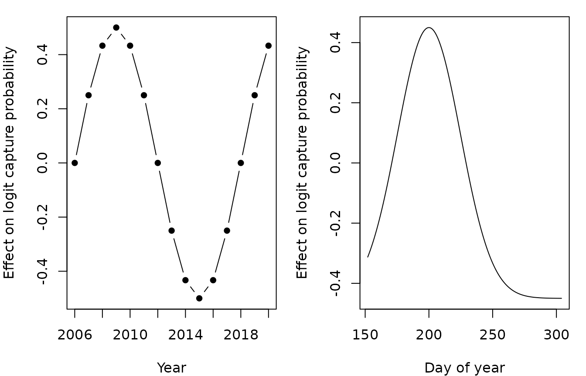
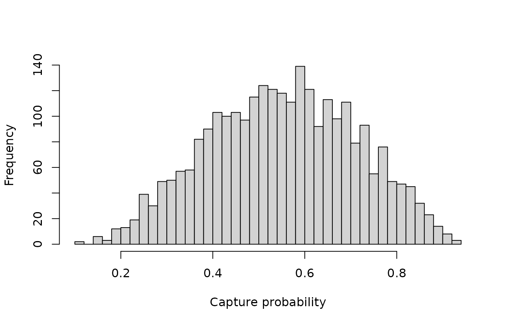

This article simulates a multipass electrofishing dataset in which everything about capture probability is known: the effects of lifestage and pass, smooth effects of year and day of the year, and random variation between visits and between samples. The same dataset is used in the worked examples on random effects and smooth terms, where the models are checked against the values used here.
The sampling design
Thirty sites are each visited once a year for 15 years, giving 450 visits. Each visit is on a random day between the start of June and the end of October, and each site has its own fished area.
set.seed(2024)
nsite <- 30
years <- 2006:2020
# one visit to each site in each year
visits <- expand.grid(siteID = paste0("Site", 1:nsite), year = years)
visits$siteID <- factor(visits$siteID, levels = paste0("Site", 1:nsite))
nvisit <- nrow(visits)
visits$visitID <- factor(paste(visits$siteID, visits$year))
# sites are fished between June and October
visits$doy <- sample(152:304, nvisit, replace = TRUE)
# the area fished (m^2) is a property of the site
visits$area <- round(runif(nsite, 80, 250))[visits$siteID]
head(visits)
#> siteID year visitID doy area
#> 1 Site1 2006 Site1 2006 217 156
#> 2 Site2 2006 Site2 2006 188 176
#> 3 Site3 2006 Site3 2006 196 231
#> 4 Site4 2006 Site4 2006 296 245
#> 5 Site5 2006 Site5 2006 260 166
#> 6 Site6 2006 Site6 2006 256 242Smooth effects of year and day of the year
Capture probability varies smoothly between years, and over the season: it is highest in the middle of July and lower in the autumn. Neither effect is linear, so a model with linear terms would miss most of the pattern. Both are on the logit scale.
# smooth effects on logit capture probability
f_year <- function(year) 0.5 * sin(2 * pi * (year - 2006) / 12)
f_doy <- function(doy) 0.9 * exp(-((doy - 200) / 35)^2) - 0.45
par(mfrow = c(1, 2), mar = c(4, 4, 1, 1))
plot(years, f_year(years), type = "b", pch = 16,
xlab = "Year", ylab = "Effect on logit capture probability")
plot(152:304, f_doy(152:304), type = "l",
xlab = "Day of year", ylab = "Effect on logit capture probability")
Samples and random effects
A sample is the set of passes for one lifestage on one visit, so each visit has two samples, one for fry and one for parr. There are two sources of random variation in capture probability:
- between visits, with standard deviation 0.4 on the logit scale. This is shared by the fry and parr caught on a visit, for example because of the water level or the fishing team on the day
- between samples, with standard deviation 0.3, which is extra variation that is specific to a lifestage on a visit
The number of fish in the fished area depends on the lifestage, the area and the site. It plays no part in the model for capture probability, but is needed to simulate the counts.
# two samples per visit: fry and parr
samples <- merge(visits, data.frame(lifestage = c("Fry", "Parr")))
samples <- samples[order(samples$visitID, samples$lifestage), ]
samples$lifestage <- factor(samples$lifestage)
samples$sampleID <- factor(paste(samples$visitID, samples$lifestage))
nsample <- nrow(samples)
# random effects on logit capture probability
sigma_visit <- 0.4
sigma_sample <- 0.3
visit_effect <- rnorm(nvisit, 0, sigma_visit)
names(visit_effect) <- levels(visits$visitID)
samples$visit_effect <- visit_effect[as.character(samples$visitID)]
samples$sample_effect <- rnorm(nsample, 0, sigma_sample)
# the number of fish in the area fished
density <- c(Fry = 0.8, Parr = 0.4) # fish per m^2
site_effect <- rnorm(nsite, 0, 0.5)
samples$N <-
rpois(
nsample,
density[as.character(samples$lifestage)] * samples$area *
exp(site_effect[samples$siteID])
)Capture probability
The data have one row for each pass of each sample. Capture
probability is higher for parr than for fry, and is lower on the second
and third passes than on the first. Giving the second and third passes
the same capture probability is what makes the model identifiable
(Millar et al., 2016), and the factor pass12 is
used for this throughout.
# three passes per sample
ef_sim <- merge(samples, data.frame(pass = 1:3))
ef_sim <- ef_sim[order(ef_sim$sampleID, ef_sim$pass), ]
rownames(ef_sim) <- NULL
# capture probability is lower after the first pass, and higher for parr
ef_sim$pass12 <- factor(pmin(ef_sim$pass, 2))
ef_sim$eta <-
0.3 +
0.5 * (ef_sim$lifestage == "Parr") -
0.4 * (ef_sim$pass12 == "2") +
f_year(ef_sim$year) +
f_doy(ef_sim$doy) +
ef_sim$visit_effect +
ef_sim$sample_effect
ef_sim$p <- 1 / (1 + exp(-ef_sim$eta))Removing the fish
On each pass every fish that is still in the fished area is caught with the capture probability for that pass, and the fish that are caught are removed.
# remove fish pass by pass
ef_sim$count <- NA
remaining <- samples$N
names(remaining) <- samples$sampleID
for (i in 1:3) {
ipass <- which(ef_sim$pass == i)
id <- as.character(ef_sim$sampleID[ipass])
ef_sim$count[ipass] <- rbinom(length(ipass), remaining[id], ef_sim$p[ipass])
remaining[id] <- remaining[id] - ef_sim$count[ipass]
}Finally, the random walk smooths used in the worked examples need factors in which every step of the walk is a level, including days of the year on which no site was fished.
The simulated data
head(ef_sim[c("siteID", "year", "doy", "lifestage", "pass", "count")])
#> siteID year doy lifestage pass count
#> 1 Site1 2006 217 Fry 1 56
#> 2 Site1 2006 217 Fry 2 27
#> 3 Site1 2006 217 Fry 3 7
#> 4 Site1 2006 217 Parr 1 27
#> 5 Site1 2006 217 Parr 2 6
#> 6 Site1 2006 217 Parr 3 1The total catch falls from pass to pass, as it should for removal data.
xtabs(count ~ pass + lifestage, data = ef_sim)
#> lifestage
#> pass Fry Parr
#> 1 33549 20237
#> 2 11454 5458
#> 3 5974 2384The simulated capture probabilities cover a wide range.
hist(ef_sim$p, breaks = 30, main = "", xlab = "Capture probability")
The values to recover
These are the values that the worked examples try to estimate.
| Value | |
|---|---|
| Intercept (fry, first pass) | 0.3 |
| Parr relative to fry | 0.5 |
| Second and third pass relative to the first | -0.4 |
| Standard deviation between visits | 0.4 |
| Standard deviation between samples | 0.3 |
| Effect of year | f_year() |
| Effect of day of the year | f_doy() |
Reference
Millar, C. P., Fryer, R. J., Millidine, K. J. and Malcolm, I. A. (2016) Modelling capture probability of Atlantic salmon (Salmo salar) from a diverse national electrofishing dataset: Implications for the estimation of abundance. Fisheries Research, 177, 1-12. https://doi.org/10.1016/j.fishres.2016.01.001